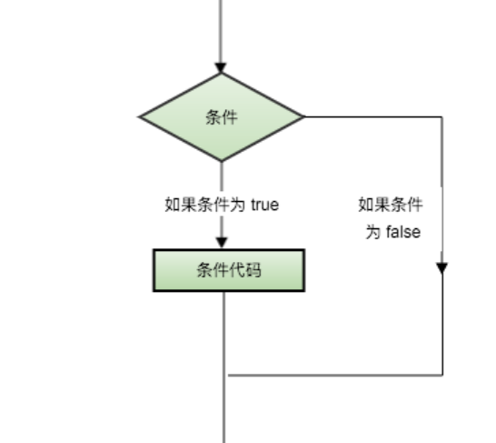

判断结构要求程序员指定一个或多个要评估或测试的条件，以及条件为真时要执行的语句（必需的）和条件为假时要执行的语句（可选的）。
C# 提供了以下类型的判断语句。
语句 描述
if语句 一个if语句,由一个布尔表达式后跟一个或多个语句组成。
if...else语句 一个if语句后可跟一个可选的else语句else语句在布尔表达式为假时执行。
嵌套if语句 您可以在一个if或else if 语句内使用另一个if或elseif语句。
switch语句 一个switch语句允许测试一个变量等于多个值时的情况。
嵌套switch语句 您可以在一个switch语句内使用另一个switch语句。
我们已经在前面的章节中讲解了 条件运算符 ? :，可以用来替代 if...else 语句。它的一般形式如下：
Exp1 ? Exp2 : Exp3;
其中，Exp1、Exp2 和 Exp3 是表达式。请注意，冒号的使用和位置。
? 表达式的值是由 Exp1 决定的。如果 Exp1 为真，则计算 Exp2 的值，结果即为整个 ? 表达式的值。如果 Exp1 为假，则计算 Exp3 的值，结果即为整个 ? 表达式的值。